Gestión de Guardias
Manual de Usuario — Coordinador
Guía completa para la administración del sistema de guardias y sustituciones.
Eduardo Davilá · Miguel Albenca · Francisco M. Carrillo
¿Qué es Gestión de Guardias?
Gestión de Guardias es una aplicación web del ecosistema EVG (Escuela Virgen de Guadalupe) que permite al equipo directivo o coordinadores gestionar las ausencias del profesorado, asignar sustituciones, administrar el libro de guardias, crear eventos académicos y mantener el catálogo de profesores y grupos.
La aplicación está dividida en dos roles:
- Profesor — Comunicar ausencias, ver horario y consultar guardias.
- Coordinador — Gestión completa de guardias, sustituciones, eventos, profesores y grupos.
Este manual está dirigido al perfil de Coordinador.
Acceso a la aplicación
Para acceder a Gestión de Guardias como coordinador:
- Abre tu navegador y ve a: https://01.proyectos.esvirgua.com/guardias/
- Selecciona el rol Coordinador en la pantalla de bienvenida.
- Inicia sesión con tus credenciales de la Intranet EVG.
- Accederás al panel de administración con el menú de navegación superior.
Dashboard
El panel principal del coordinador muestra un resumen visual del estado del centro con los siguientes indicadores (KPIs) que se cargan automáticamente:
Además, el dashboard incluye:
- Gráfico semanal — Línea con el número de sustituciones por día (lunes a viernes).
- Guardias pendientes — Lista de sustituciones de hoy que aún no tienen sustituto asignado.
- Profesores ausentes hoy — Cuadrícula con fotos y nombres de los profesores que están ausentes.
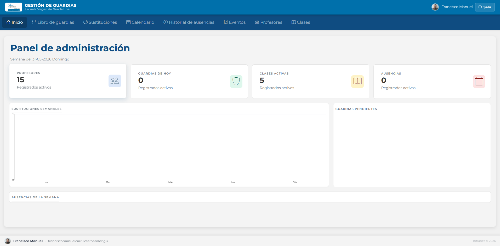
Panel principal con KPIs, gráfico semanal y listado de ausentes
Libro de guardias
El Libro de guardias es una cuadrícula que organiza las guardias por horas lectivas (filas) y días de la semana (columnas: L, M, X, J, V).
Visualizar guardias
Cada celda puede contener hasta 2 profesores de guardia. Se muestra:
- Nombre del profesor.
- Contador de sustituciones realizadas (badge).
- Icono de edición (lápiz) para cambiar el profesor.
- Icono de eliminación (papelera) para quitar la guardia.
Las celdas vacías muestran el botón "Añadir profesor 1/2".
Añadir una guardia
En la celda del día y hora deseados.
Elige de la lista desplegable de todos los profesores disponibles.
Haz clic en "Realizar Asignación". El sistema valida que el profesor no supere el límite de horas (tutores: máx. 1h, no tutores: máx. 2h).
Exportar el libro
Puedes descargar el libro de guardias completo en los siguientes formatos:
- Excel (XLSX) — Tabla con horas, días y profesores asignados.
- PDF — Documento estilizado con logo, cabecera azul y filas alternas.
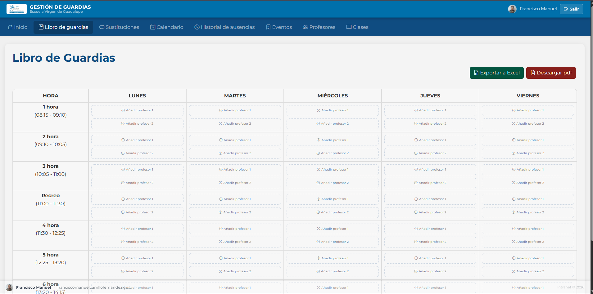
Cuadrícula del libro de guardias con asignaciones por día y hora
Sustituciones
La tabla de Sustituciones lista todas las ausencias del profesorado con el estado de cada sustitución. Es el panel central para la gestión diaria.
Columnas de la tabla
| Columna | Descripción |
|---|---|
| Profesor ausente | Nombre del profesor que falta |
| Clase | Grupo afectado |
| Fecha | Día de la ausencia |
| Hora | Periodo lectivo |
| Estado | CONFIRMADO o PENDIENTE |
| Sustituto | Profesor asignado (o vacío) |
Filtros
Puedes filtrar los datos usando:
- Búsqueda por profesor — Campo de texto con búsqueda en tiempo real.
- Filtro por estado — Selecciona Todos/Confirmados/Pendientes.
- Filtro por justificación — Ausencias justificadas o sin justificar.
- Rango de fechas — Selecciona fecha desde y hasta con el calendario.
- Reiniciar filtros — Botón que limpia todos los filtros aplicados.
Asignar un sustituto
En la fila de la sustitución que deseas cubrir (solo disponible si el estado es PENDIENTE).
Elige entre los profesores asignados a esa hora (guardia) o los profesores libres por eventos.
El sistema actualiza el estado a CONFIRMADO, incrementa el contador del profesor y envía un email de notificación.
Ver detalle de ausencia
Haz clic en el icono para abrir una ventana modal con la información completa de la ausencia: profesor, clase, fecha, hora, estado, justificación y motivo.
Eliminar sustitución
Haz clic en el icono para eliminar una sustitución. Se mostrará un mensaje de confirmación. Solo se pueden eliminar sustituciones con estado PENDIENTE.
Exportar
Puedes exportar la tabla a Excel o PDF usando los botones superiores.
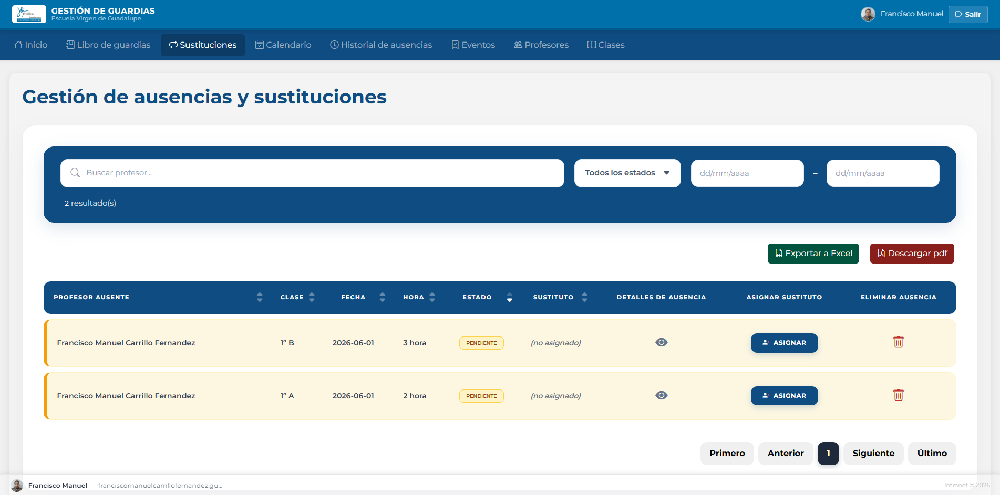
Gestión de sustituciones con filtros y acciones por fila
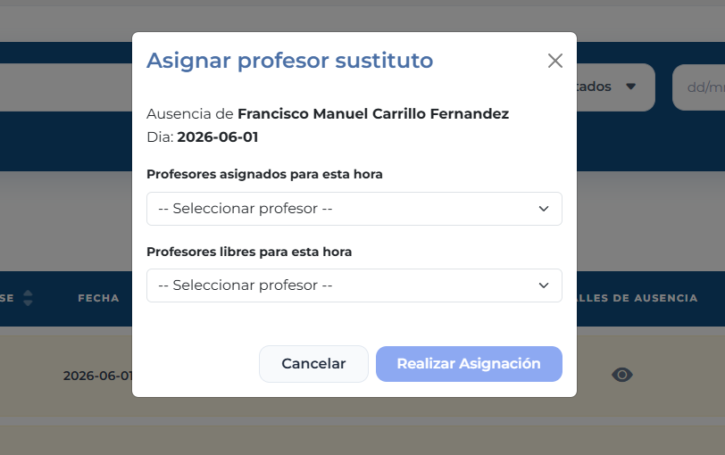
Ventana modal para asignar un sustituto a una ausencia
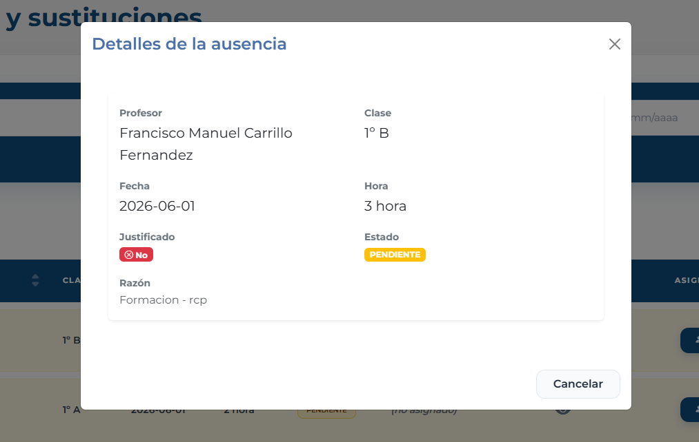
Ventana modal con el detalle completo de la ausencia
Calendario
La vista de Calendario muestra en un calendario mensual todas las sustituciones confirmadas, coloreadas según la etapa educativa del grupo:
| Etapa | Color |
|---|---|
| Infantil | Cian |
| Primaria | Naranja |
| ESO | Azul |
| Bachillerato | Verde |
| Grado Medio | Morado |
| Grado Superior | Rojo |
En escritorio se muestra la vista mensual con cuadrícula. En móvil cambia automáticamente a una lista de eventos. Al pasar el cursor sobre un evento, aparece un tooltip con la clase, el profesor ausente y el sustituto.
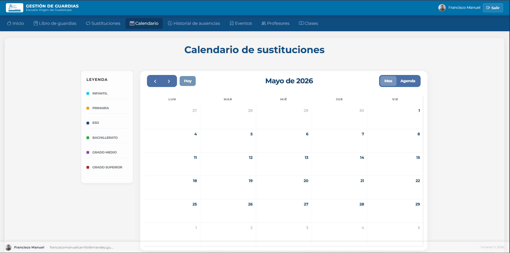
Vista mensual del calendario con sustituciones coloreadas por etapa
Historial de ausencias
El Historial de ausencias ofrece una vista retrospectiva de todas las ausencias registradas, independientemente de si tienen o no sustitución asignada.
Columnas de la tabla
| Columna | Descripción |
|---|---|
| Profesor ausente | Nombre del profesor |
| Horas ausentes | Número de periodos afectados |
| Fecha | Día de la ausencia |
| Motivo | Razón indicada |
| Justificación | Justificada o Sin justificar |
Filtros disponibles
- Búsqueda por profesor — Campo de texto.
- Justificación — Todas/Justificadas/Sin justificar.
- Rango de fechas — Desde / Hasta.
- Reiniciar filtros — Limpia todos los filtros.
Haz clic en el icono para ver el detalle completo de la ausencia, incluyendo las horas afectadas, el estado de cada sustitución y el justificante si existe.
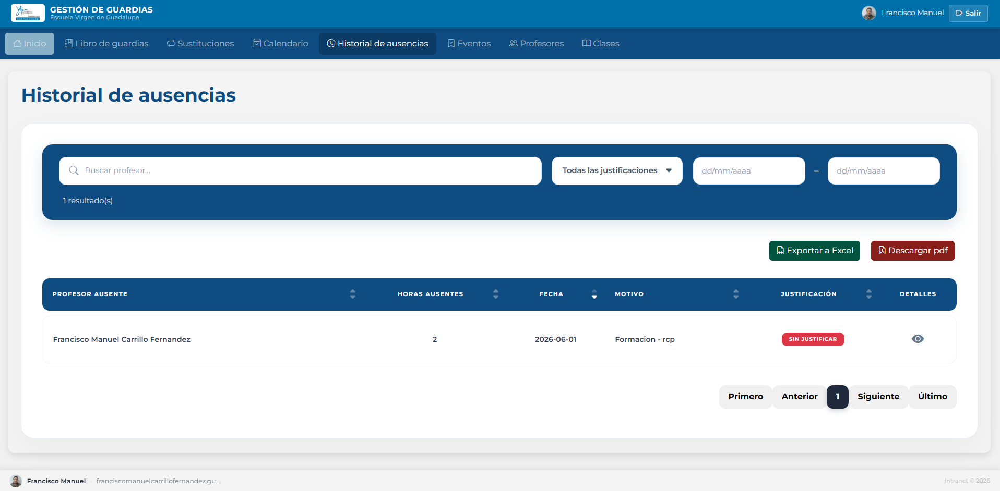
Historial completo de ausencias con filtros y detalles
Gestión de eventos
Los Eventos son actividades académicas que afectan a la docencia (excursiones, visitas, jornadas, etc.). Al crear un evento, el sistema genera automáticamente las ausencias de los profesores acompañantes y las sustituciones necesarias.
Crear un nuevo evento
Se abre una ventana modal con el formulario de creación.
Título, descripción, fecha de inicio y fecha de fin.
Añade los grupos que se ven afectados por el evento (opcional).
Marca las horas lectivas que abarca el evento.
Selecciona los profesores que acompañarán al alumnado. El sistema generará sus ausencias automáticamente.
Haz clic en "Crear Evento". El sistema crea el evento, las ausencias de los acompañantes y las sustituciones pendientes.
Editar y eliminar eventos
Los eventos se muestran como tarjetas en una cuadrícula de 2 columnas. Usa el icono de lápiz para editar y el icono de papelera para eliminar. Al eliminar un evento, también se eliminan las ausencias asociadas.
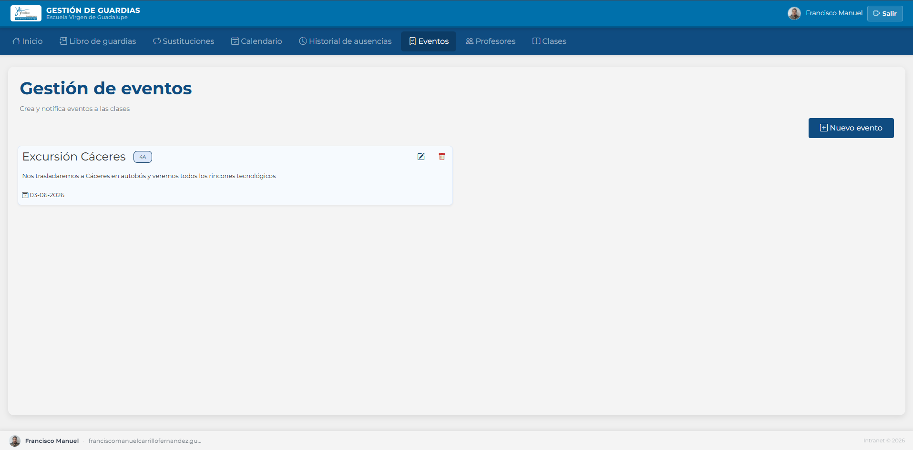
Tarjetas de eventos con acciones de editar y eliminar
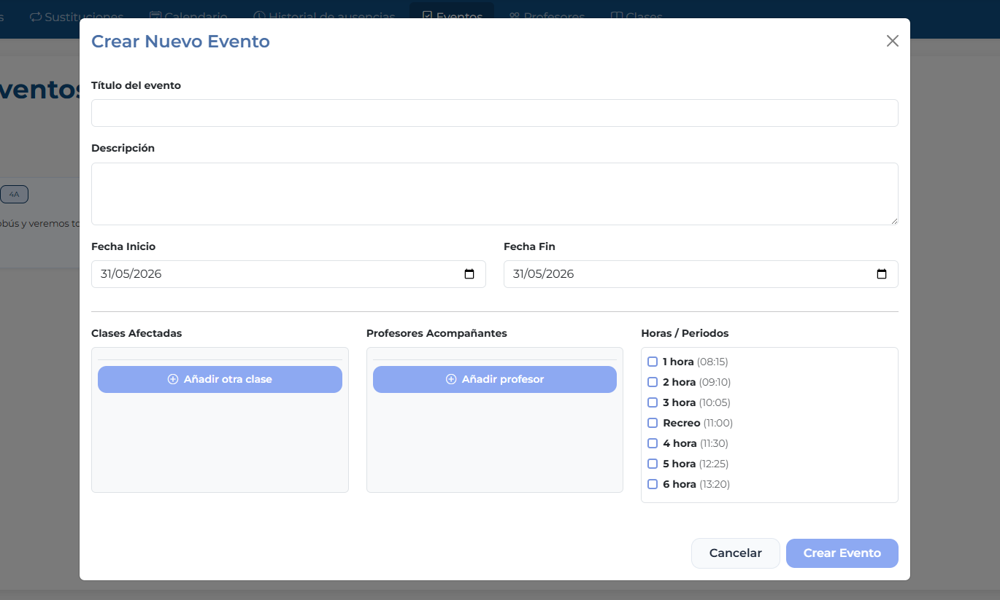
Formulario modal para crear o editar un evento
Gestión de profesores
La sección de Profesores muestra el listado completo del profesorado sincronizado desde la Intranet EVG.
Columnas de la tabla
| Columna | Descripción |
|---|---|
| Nombre | Nombre completo del profesor |
| Correo electrónico | |
| Teléfono | Número de contacto |
| Sustituciones | Contador de sustituciones realizadas |
| Tutor | Sí o No |
Cargar horario de un profesor
Para importar el horario de un profesor desde un archivo Excel:
Haz clic en "Descargar Plantilla" para obtener el archivo XLSX con el formato requerido.
Completa el horario del profesor usando los códigos de clase disponibles (el archivo incluye validación de datos).
Haz clic en el icono de calendario junto al profesor, selecciona el archivo XLSX y haz clic en "Importar horario".
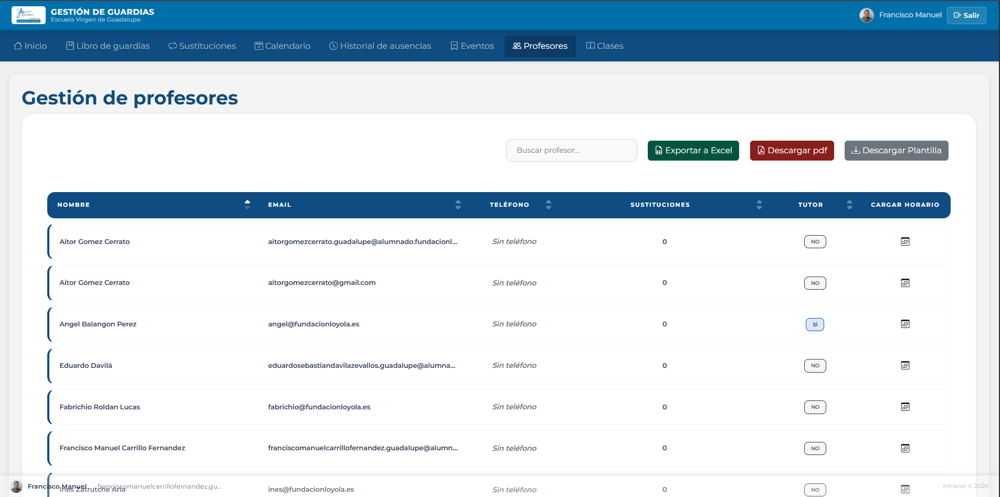
Tabla de profesores con opciones de exportar y cargar horario
Gestión de grupos
En Clases puedes administrar los grupos del centro.
Crear un nuevo grupo
Se abre un modal con el formulario de creación.
Ejemplo: 2-DAW (máx. 10 caracteres, alfanumérico con guiones).
Ejemplo: 2º Des. Aplicaciones Web (máx. 50 caracteres).
ESO, BACH, CFGM, CFGS o PRIM.
Haz clic en "Crear grupo".
Editar y eliminar grupos
Usa el icono de lápiz para modificar un grupo. Usa el icono de papelera para darlo de baja (eliminación lógica: el grupo se desactiva, no se borra).
- El código debe ser único. No puede repetirse.
- No se puede modificar un grupo que ya está dado de baja.
- Máximo 255 grupos en el sistema.
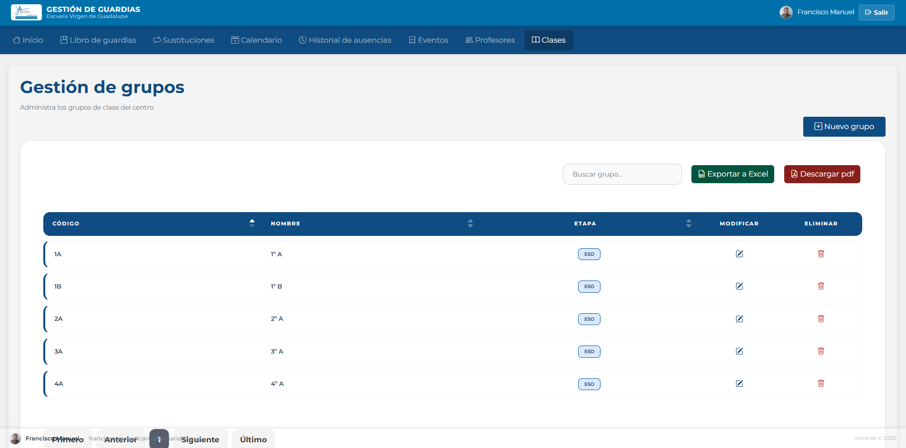
Tabla de grupos con opciones de editar, eliminar y exportar
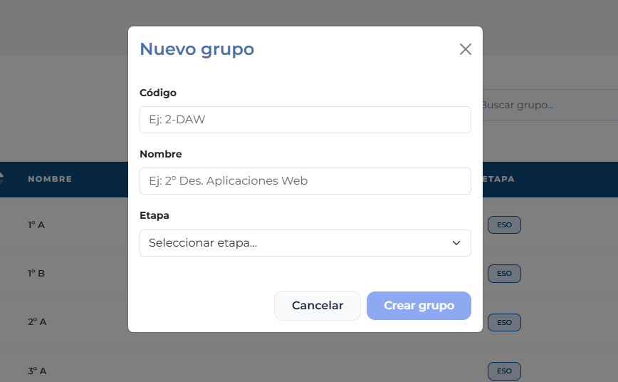
Formulario modal para crear o editar un grupo
Resolución de problemas frecuentes
No aparecen los profesores en el listado
Los profesores se sincronizan desde la Intranet EVG al iniciar sesión. Si faltan profesores, verifica que la conexión con la Intranet esté activa o solicita al profesor que inicie sesión para sincronizar sus datos.
No se puede asignar un sustituto
Verifica que el estado de la sustitución sea PENDIENTE. Las sustituciones CONFIRMADO no se pueden modificar. Además, asegúrate de que haya profesores disponibles (en guardia o libres) para esa hora.
Error al asignar guardia: límite de horas
Los tutores solo pueden tener 1 hora de guardia semanal y el resto de profesores 2 horas. Si un profesor ya ha alcanzado su límite, deberás seleccionar a otro profesor para esa guardia.
El horario importado da error
Verifica que estás usando la plantilla descargada desde la aplicación y que los códigos de clase existen en el sistema. El archivo debe ser XLSX y no superar los 5 MB.
Al crear un evento no se generan las ausencias
Comprueba que has seleccionado al menos un periodo lectivo y has añadido profesores acompañantes. Las ausencias solo se generan para los profesores seleccionados como acompañantes.
No encuentro un grupo que creé
Si el grupo no aparece en la tabla, es posible que haya sido dado de baja. Verifica en la base de datos o contacta con soporte técnico.
Contacto
Para cualquier incidencia técnica o duda sobre el funcionamiento de la aplicación, contacta con el departamento de informática de la Escuela Virgen de Guadalupe.